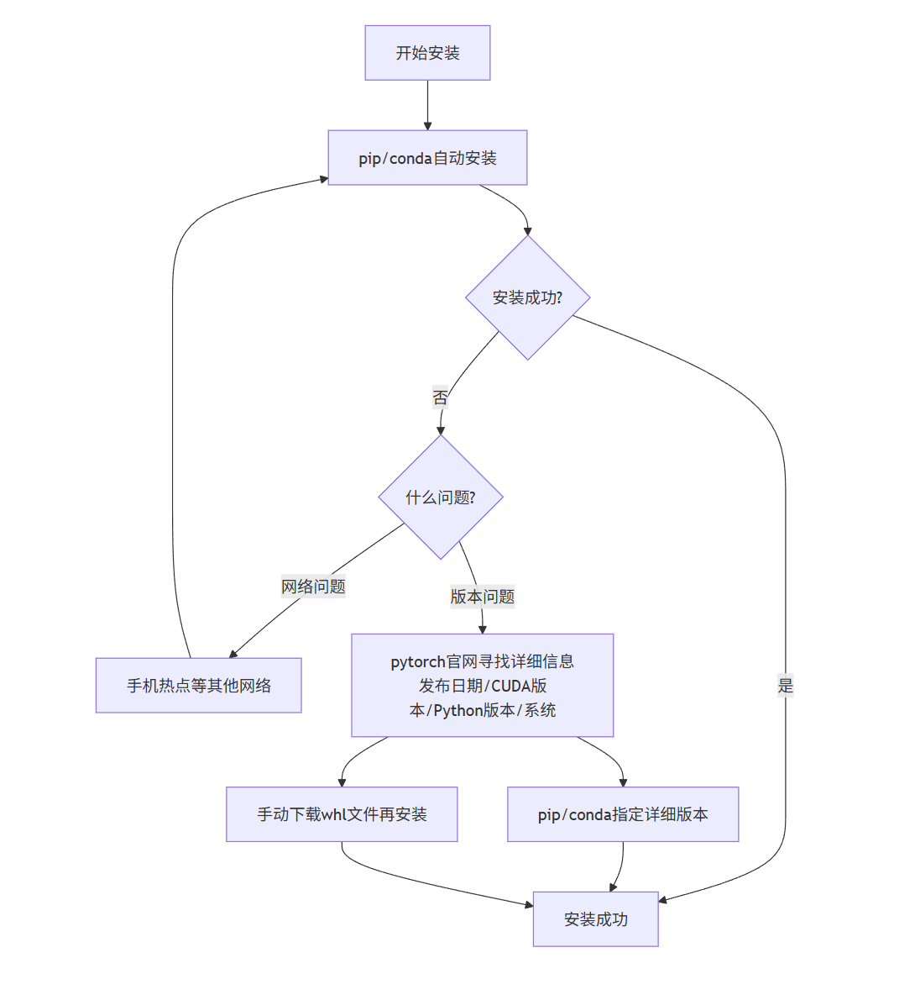

初试大创
时间经过：2025.10-2026.1
这里记录了我首次参与大创项目的相关经历与心路历程
一、打开新的大门
那是2025年的10月，西安很冷。
学长说那是不同寻常的一年。因为往年的这个时候，才正该秋高气爽。
偶然性的一天，我灵光一闪，打开了学校的官网，并发现了一篇文章。那是一篇关于征集创新训练计划命题的通知，并附带了一个在线文档，学生和老师可以在文档里双向选择。我反手就把这个发给了舍友。
就这样，在我的提醒下，我们宿舍四个人都研究起了这个叫做什么创新的东西。
接下来的每一天，我们都会兴高采烈地看看在线文档，翻一翻有没有我们感兴趣的命题。同时，我们逐渐意识到了自己的兴趣所在，也发现了彼此之间兴趣的迥异。我们也慢慢地知道了“大创”是个什么东西。
到了十一月初，我给一位老师发了电子邮件，并借助AI和网络的学习资源，完成了类似于初筛的任务。再后来我收到了老师的邮件，并得知自己已被入选。
刚收到消息、还未打开邮件时，我是那么的紧张。直到得知了自己被入选，紧张的余悸还未散去，而一股激动与焦虑却又已经随之而来。我激动于自己被入选的有幸，却也焦虑于自己缺少真才实干的不自信。我能做什么？我能做好吗？我不知道。直到我又想起了那句偶然在网上看见的话：“不要为还没发生的事情担心”。我的心这才恢复了些许理智，并悄悄许下不断学习、不断进步的承诺。
二、鱼和熊掌
鱼和熊掌不可兼得
也是十月份，辅导员老师在群里发了一个消息。那是一张图片，是全国大学生系统能力大赛操作系统设计赛区域赛的技术培训会的海报。（这名字好长啊我去）
观看线上培训会+上网查询相关信息后，我知道了：这个比赛的第一阶段是线上进行的，考察的是操作系统的知识，可以一个人参加，能加综测分。这简直是为我量身定做的啊：不爱出门且有点内向的考虑保研的计算机类学生。
于是我决定，要参加，就当玩了。不必得奖，重在学习。
直到期中考试结束，我开始仔细研究这个比赛的报名，发现需要有至少一名指导老师。我一下子就懵住了。难道要我去主动联系一位指导老师吗？这对我来是简直是天大的难题啊。（因为我不是很擅长社交之类的事情
经过简单地询问AI，我觉得可以试着问问辅导员老师，只需要挂名，不需要花费老师过多时间。
但舍友又提醒我了，指导老师可能会涉及到相关责任的问题，这并不好办。经过慎重考虑……我没想出来结果。
正当我还在考虑的时候，大创项目的老师回信了。我被入选了。
大创老师还提醒我们，说要想真正学到东西、做好项目，就需要投入大量时间。
我彻底懵了。
我知道，大创项目确实需要很多的时间与精力的投入，才能真的做好。
但那个操作系统设计大赛呢？
我陷入了短暂的思考。
为什么说是短暂的思考呢？
因为我很快得到了答案。
操作系统设计大赛涉及到指导老师，这太消耗我的心力了。另一方面我刚被大创老师同意入选，大创是一定要做好的。我怕我忙不过来。
于是我决定放弃操作系统设计大赛。
我也学会了：鱼和熊掌不可兼得。
三、学习与进步
老师说我基本零基础，有些东西要自己学自己练
然后给了我一个学习路径
那还说啥了，学呗
李沐B站主页
《动手深度学习》
另外还有廖雪峰的Python教程
这里是我第一次上手尝试CUDA，Conda，Jupyter，PyTorch，都挺酷的，有点意思
1.下载与安装
我单方面宣布，配置环境是最难的一步
一开始，我下载了各个工具，还试了一下，能跑。
后来某一天，突然报错了，说找不到d2l库的文件。我问AI，AI说问题可能是我用的d2l库太新了，不兼容。我按着AI的指引，把d2l从新版本1.0.3换成李沐老师录制课程时用的老版本了。又报错。我开始把一些东西卸载，安装，卸载，安装。无果。
我开始不相信AI。于是我又Conda新建环境，按着网上几个博客的教程，又尝试了一下安装。试了一下，还行，能跑。
后来某一天，又报错了。AI说是我电脑GPU太新了，而下载的PyTorch又太老了，不能用。
（我以为的）当前问题是：
国内源没有适合我电脑GPU的PyTorch新版本
官方源网络不好，很难下载
于是我又尝试从官网手动下载whl文件、再pip安装
下载的过程中，依旧很慢。
但我突然想起来，之前我用的都是校园网，我可以尝试一下手机的个人热点啊。于是很快就下载完了。这时候我就又突然意识到，可能pip下载也可以用手机热点，只是我之前没尝试……所以问题核心可能并非在于手动or自动下载，而是网络的快慢（
在我尝试安装的时候，不小心弄错了，自动从清华源下载了。但是下载成功了。为啥啊？我以为国内源没有适合我电脑GPU的PyTorch新版本啊？
原来我又错了。国内源其实是有PyTorch新版本的，只是需要我来详细指定版本，如发布日期、CUDA版本、Python版本、操作系统等。比如我下载的是torch-2.10.0.dev20251017+cu128-cp310-cp310-win_amd64.whl
然后我又随便跑了个模型，发现成功了，能跑。我就又反应过来，可能d2l版本并不重要，新的1.0.3也可以。但当初为什么会报错呢？或许是玄学吧（
总结就大概是这样吧：

{kind=link}
然鹅这两天我又突然发现，d2l的jupyter代码运行依然出错。可能是d2l的版本不同、函数名不同，所以不能正常运行罢
2.不断进步
系统性的学习真好啊
这应该是上大学以来，我第一次尝试在网上系统性地学点什么。李沐老师讲的也好，设计的也好。感恩。伟大的互联网精神
3.戛然而止
大一上的期末考试结束了，而我早已买了飞机票，准备起飞
但临近期末的时候，我们接到老师的通知，说是计划在考后进行一次线上会议，交流大家的学习进展。
就这样，带着一丝紧张和不安，我飞回了家
但是没过几天，老师又在群里发了消息
老师说，项目最终未能入选学校的正式立项。
老师在群里鼓励我们，说如果之后还有兴趣继续钻研，依然欢迎一起探索。
那还说啥了
“收到，谢谢老师”
4.或许，就这么结束了？
似乎是就这么结束了
但我觉得这个项目的想法明明蛮有意思的啊，毕竟它涉及到了多模态的AI模型和具体的硬件实体。
或许学校的要求更高一些吧
不过说真的，这我就很知足了
因为我去看了那个李沐老师的课，这我是学到真东西了，像是Python语法，Conda的用法，深度学习的一些理论等等
总而言之呢，这“第一次”的尝试，虽然没有什么成果，但还是让我学到了很多。不管是直接的知识、经验，还是潜在的工程思维、合作意识，都让我收获颇丰
感谢，感恩，感激
|･ω･｀)
P.S.语言风格前后可能有一些不一样，因为这篇博客是我前后写了好几次的，而每次写的是不同的部分